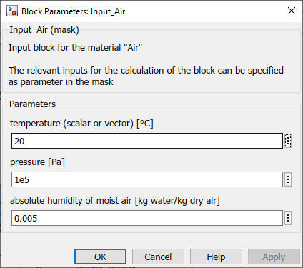
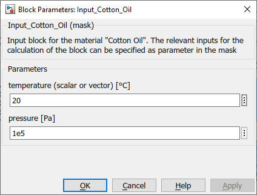
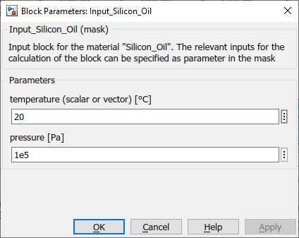
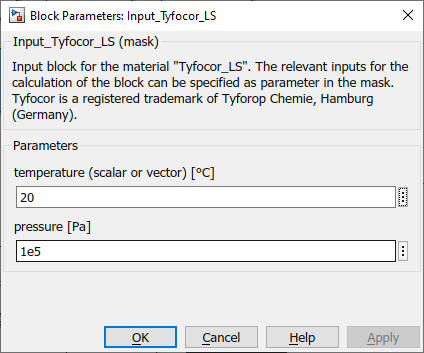
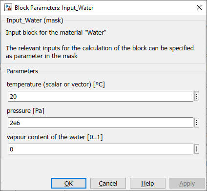
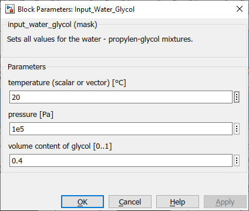

Input_<material>
Path: CARNOT/Basic/Material_Properties
Purpose:
The block facilitates the input of the material for the fluid property blocks.
Description:
The Input block provides a mask in which the inputs for the calculation of a
fluid property like the density, viscosity or the enthalpy can be entered easily.
The definition of the fluid mix parameter especially becomes more clear for the
different fluids in FluidEnum. The blocks exist for
the materials water, air and Typhocor LS, water-glycol, cotton oil and silicone
oil. They are intended to work with the material property blocks.
Output:
| T | : | temperature in °C |
| p | : | pressure in Pa |
| Fluid_Type | : | see definition of CARNOT fluid types |
| Fluid_Mix | : | see definition of CARNOT fluid mixtures |
Parameters and Dialog Box:





Examples:
Open the example explorer from the Matlab command window
ExampleBrowser
or load the examples via the CARNOT library.
Characteristics:
| Direct Feedthrough | : | No |
| Sample Time | : | inf |
| Vectorized | : | No |